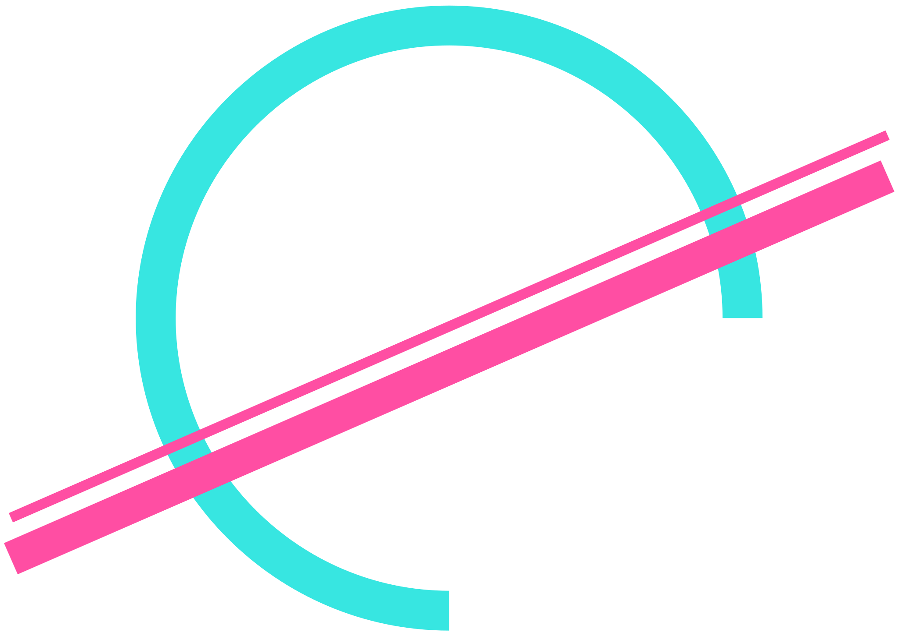
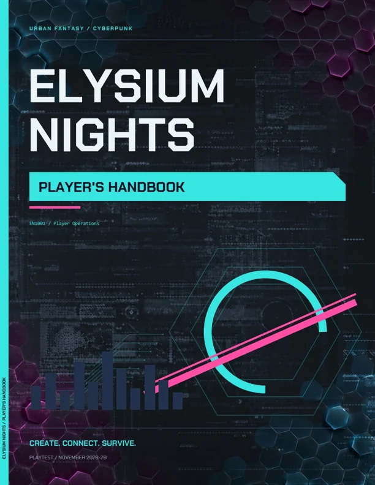
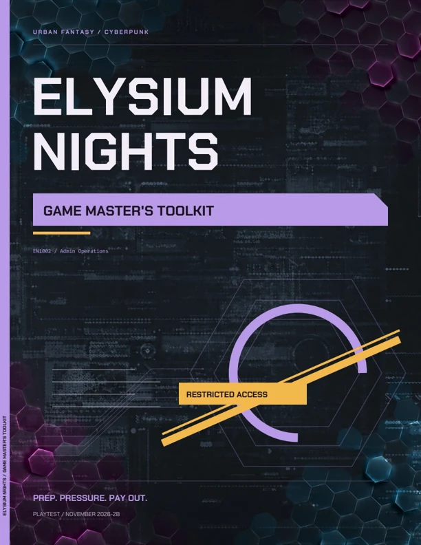

Survival is a subscription.
Corporations sell everything it takes to stay alive. Your identity lives on #PRINT. Your next job might cover rent, or give someone powerful a reason to remember your name.

ELYSIUM NIGHTSThe corporations own the city. The Flow runs beneath it.
You and your crew still have rent to pay.
Elysium sells safety, power, and identity by subscription. Freelancers make their living in the gaps.
Take contracts. Pull people out of trouble. Get into worse trouble yourself. Between the corporations, the gangs, and the things that don't belong to this reality, there's always work.
There's also a diner that never closes, and a crew that comes back for you.
Corporations sell everything it takes to stay alive. Your identity lives on #PRINT. Your next job might cover rent, or give someone powerful a reason to remember your name.
A metaphysical current runs beneath everyday life. Shape it into an Invocation, reach for a miracle, and live with what it costs. The impossible is part of the neighborhood.
Every streetlight, ID, and corporate vault runs through it. Codebreakers work its Nodes with Smartdecks and Ciphers. Getting in is easy. Getting out clean is the job.
Your class is how you work.
Who you work for is another question.
· · · ·
A past of your own. A place in the crew.One player runs the city as the Admin. Everyone else builds a Freelancer. Then you all find out how the job really goes.
Read the introductionChoose a species, lineage, background, and class. Decide who you trust, what you need, and who you won't leave behind.
d10 dice pools resolve longer efforts like investigation, negotiation, and crafting. The d20 covers the split-second stuff: attacks, Saves, anything with the clock running.
The job doesn't end when the shooting stops. Recover, maintain your gear, settle debts, and decide what the next contract is worth.
Download the books, take them to your table,
and tell us what held up under pressure.
Playtest drafts. Rules and page numbers may change.

START HERE ↗Build your Freelancer. Learn the core rules, the Flow, the #GRID, and life between jobs. Includes a character sheet.
Download handbook November 5, 2026 · 5B · 9.9 MB
FOR THE ADMIN ↗Run the city with job tables, threats, encounter guidance, district details, and prep tools. Contains GM material.
Download toolkit November 5, 2026 · 4A · 8.3 MBStart with the Player's Handbook. The Admin should also have the Game Master's Toolkit. Meet for a session zero to agree on tone, boundaries, and the crew's shared history before taking the first job.
Street work, corporate intrigue, cryptid hunts, and Incursion dives. Run heists, horror, or a crew finding family in a hard city. Mix them however your table likes.
Tell us what you tried, which book and section you used, what you expected, and what happened. Confusing wording, surprising encounters, and builds that fall apart in play are all useful. Send notes by Discord or email below.
The builds that worked. The jobs that went sideways.
The rule that stopped the table. We want to hear it.